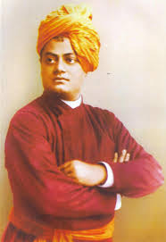

“Learn everything that is good from others, but bring it in, and in your own way absorb it; do not become others.”
Swami Vivekananda
12 January 1863 - 4 July 1902
Biography
Swami Vivekananda was a prominent Indian monk and philosopher who played a crucial role in the revival of Hinduism in India and the introduction of Indian philosophies of Vedanta and Yoga to the Western world. Born as Narendra Nath Datta, he was a chief disciple of the 19th-century saint Ramakrishna. Vivekananda’s teachings on spirituality, self-realization, and the universal truth of religions had a profound impact globally, inspiring people from various walks of life.
Achievements
- Key figure in the introduction of Indian philosophies of Vedanta and Yoga to the Western world.
- Addressed the Parliament of the World's Religions in Chicago in 1893, gaining international recognition.
- Founded the Ramakrishna Mission in 1897, aimed at social service and promoting the teachings of Ramakrishna.
- Authored numerous works on spirituality, philosophy, and religion, which continue to inspire millions.